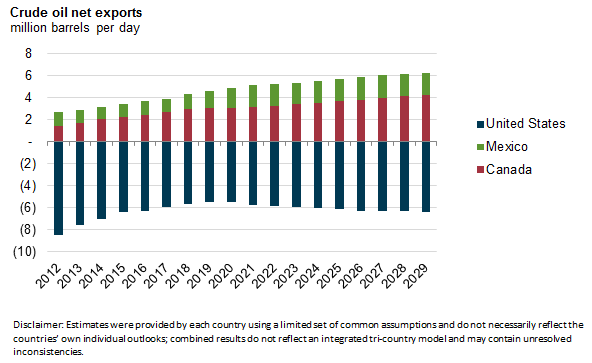
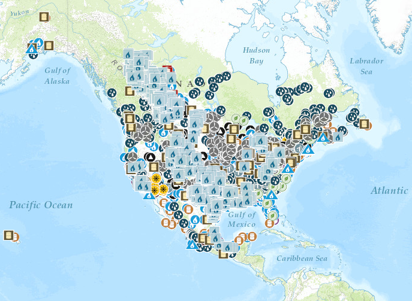

{kind=link}
{kind=link}
Projects published on Beta are not final and may contain programming errors. They are for public testing and comment only. We welcome your feedback. For final products, please visit www.eia.gov.
North American Cooperation on Energy Information (NACEI)
Introduction
Context & motivation
The energy markets of Canada, Mexico, and the United States are becoming increasingly interdependent as physical infrastructure continues to be built across North America. With free trade treatment of many energy commodities, the three neighboring countries include each other's largest import and export markets for many of these commodities.
{kind=link}
Geographic proximity has also led to some degree of market integration—for example, regional electricity markets extend across the U.S./Canada border, broadening the market in both countries. Conversely, North American geographic isolation creates trade barriers to the rest of the world for energy commodities like natural gas and electricity, while other commodities such as crude oil and petroleum products travel more readily over water. As a result, Mexico, Canada, and the United States can be understood as a single (semi-integrated) regional energy market with internal commodity flows and external links to the rest of the world. For example, most of the crude oil exported from Mexico and Canada finds its way into U.S. refineries, and much of the U.S. demand for crude oil imports is satisfied by its neighbors. The United States also exports relatively large volumes of petroleum products to both Canada and Mexico. Net trade in crude oil and refined petroleum products between these three countries and the rest of the world is relatively modest by comparison. Natural gas generally follows a north-to-south flow pattern on a net basis from Canada to the United States and into Mexico.
To understand and anticipate the future of energy markets within their borders, the governments in these three countries produce forward-looking energy outlooks. Each outlook makes explicit or implicit assumptions about other North American energy markets, including prices, infrastructure growth, and commodity trade flows. Some of these assumptions are based on historical data that Canada, Mexico, and the United States submit to the International Energy Agency (IEA), or with reference to the other nations' published outlooks. Nevertheless, national energy outlooks have usually been prepared independently, despite the important connections between the physical markets across the three countries. In the Trilateral Memorandum of Understanding, a subgroup was created with a mandate to improve coordination and understanding of the national energy outlooks and modeling systems (Subgroup C).
Outlooks and modeling systems
Canada: The National Energy Board (NEB) has been producing long-term energy supply and demand projections regularly since 1967. Its latest outlook, Canada's Energy Future 2015: Energy Supply and Demand Projections to 20401 (EF2015), projects energy supply and demand for Canada to the year 2040. These outlooks are created using the NEB's Energy Futures Modeling System, which contains various supply and demand modules that interact to produce the outlook at a provincial and territorial level. The supply modules include oil sands, non-oil sands crude oil, natural gas, and natural gas liquids production models that are developed within the NEB. ENERGY 2020, an integrated energy model developed by Systematic Solutions Incorporated, creates the demand and electricity projections. Demand projections are made across four general sectors, each of which has several sub-sectors: residential, commercial, industrial (including oil and natural gas production), and transportation. An external macroeconomic forecaster, Centre for Spatial Economics (C4SE), provides the macroeconomic outlook.
Mexico: Mexico's Energy Ministry is responsible for the publication of annual energy outlooks, which project approximately 15 years into the future (currently to 2029). A number of agencies participate in the development of demand and supply forecasts for hydrocarbons and electricity. Comision Nacional de Hidrocarburos (CNH), the national Hydrocarbon Commission, is responsible for oil and natural gas production projections based on estimations provided by Petroleos Mexicanos (Pemex). Mexico's refining model includes details on the transportation of petroleum-derived products to provide projections of logistics and processing capacities, crude processing, and oil products imports, and production. Mexico's Natural Gas Transportation System model uses inputs of prices, demand, capacity, infrastructure, and specifications to obtain results for logistics and processing capacities and for liquidsgas balances.
Specific models are used for each demand sector—transportation, industrial, residential, electricity selfsupply, services, air transport, rail demand, and agriculture—in order to project fuel demands by product, region, and industry.
The national electricity company, Comision Federal de Electricidad (CFE) uses a set of models to provide electricity demand forecasts by sector—residential, commercial, public lighting, water pumping, irrigation, large and medium industries—and region. Mexico also uses the PLEXOS for Power Systems Capacity Expansion model to estimate the capacity expansion, associated generation reliability of the system, environmental impacts, unit commitment and economic dispatch, revenue adequacy and uplift, transmission lines expansion, reserve margin, and intermittent energy sources impact.
United States: The U.S. Energy Information Administration (EIA) produces the Annual Energy Outlook (AEO) using the National Energy Modeling System (NEMS). The most recent AEO was released in April 2015, with projections to 2040.
Overall, NEMS represents the behavior of energy markets and their interactions with the U.S. economy. The model achieves a supply/demand balance in the end-use demand regions, defined as the nine Census divisions or model specific regions (i.e., refining regions), by solving for the prices of each energy type that will balance the quantities producers are willing to supply with the quantities consumers are expected to demand. The system reflects market economics, industry structure, and existing energy policies and regulations that influence market behavior.
NEMS has four supply modules: oil and natural gas, natural gas transmission and distribution, coal market, and renewable fuels, two conversion modules: electricity market and petroleum market, four end-use demand modules: residential, commercial, industrial, and transportation, one module to reflect macroeconomic activity, one module to simulate international energy markets, and one module that provides the mechanism to achieve a general market equilibrium among all the other modules.2
Scope of current effort
Activities during the first six months of the Trilateral effort for Subgroup C included regular meetings of the member parties to gain a better understanding of the respective modeling frameworks. A centerpiece in these discussions was a comparison of each country's current official projections, with a particular focus on understanding cross-border trade. Given certain limitations surrounding outlook results, net exports were used as a proxy where necessary. The discussion results and activities during the first half of the year were documented in a 180-day report, which was shared with each country's ministerial and secretarial representatives.
The current report extends the previous effort by using a common set of assumptions across all three countries while maintaining the same respective models and methods used by each of them to produce their national outlooks. The resulting Trilateral Energy Outlook is presented here for comparison purposes and to identify areas where further coordination and understanding could yield the greatest mutual benefit. The shared assumptions, which were either assumptions or results from EIA's AEO2015 Reference case, were implemented into Canada and Mexico's modeling frameworks. They are listed in the appendix. These assumptions include world oil prices, the Henry Hub natural gas price, and U.S. gross domestic product growth.
Although the Canadian and U.S. models support projections that extend to the year 2040, the Trilateral Energy Outlook projection period runs through 2029, which is the last year of Mexico's planning horizon.
Caveats
The 2015 Trilateral Energy Outlook Project provides a compendium of separate results from the national energy models of Canada, Mexico, and the United States that are used to produce each country's official energy outlook. The Canadian and Mexican model runs are based on a common set of assumptions, largely assumptions or results from EIA's AEO2015. It is important to note that the use of these common model input assumptions does not represent implicit or explicit endorsement of the assumptions themselves by any of the three countries, and the individual country-level results presented in this document may differ significantly from nationally published outlooks.
This exercise was undertaken to gain insight into the dynamics of each country's energy modeling systems using a common set of assumptions, but it does not reflect results of an integrated North American energy model. The results should not be construed as an official outlook for any of the Trilateral members. Additionally, since the individual energy models were not linked to provide feedback from one model to another, some of the model results, including trade flows, are inconsistent across models.
Although the common set of assumptions used in the 2015 Trilateral Energy Outlook Project were based on EIA's AEO2015, results for Mexico and Canada may differ from their respective outlooks and should not be understood to be in any way endorsed by the energy agencies in these countries. By construction, the U.S. outlook in Trilateral Energy Outlook is identical to AEO2015. For official Canadian and Mexican outlooks, see EF2015 and Mexico's Energy Outlooks 2015-29, respectively.
Footnotes
1Forthcoming. When published will be available at www.neb-one.gc.ca.
2For complete NEMS overview: http://www.eia.gov/forecasts/aeo/nems/overview/pdf/0581(2009).pdf.
Map Highlights
Energy-Specific Static Maps
Participating Country Agencies
United States
Project Feedback
Read what others are saying about this project.
02/16/2016 - Texas, United States
I really like this - the site looks good and I look forward to getting into the data as it moves forward.